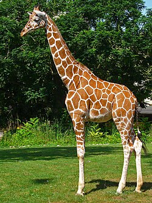
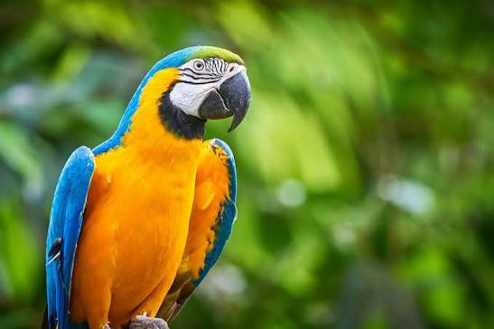

A comprehensive document detailing some of Earth's most fascinating creatures.

The giraffe is a large African hoofed mammal belonging to the genus Giraffa. It is the tallest living terrestrial animal and the largest ruminant on Earth. They are known for their extremely long necks, long legs, and distinctive spotted coat patterns. They live in herds, are incredibly peaceful, and use their height to spot predators from far away.
| Category | Details |
|---|---|
| What they eat (Diet) | Leaves, twigs, and fruits. Their absolute favorite is the thorny Acacia tree. |
| Where to see them (Habitat) | African savannas, vast grasslands, and open woodlands. |
| Daily Behavior | They sleep for only 30 minutes a day and spend up to 75% of their waking time eating. |

Macaws are long-tailed, highly colorful New World parrots. They are highly intelligent, social birds that often mate for life. Their large, powerful, curved beaks easily crack open hard nuts and seeds, and their scaly tongues have a bone inside them to help tap into fruits.
| Category | Details |
|---|---|
| What they eat (Diet) | Seeds, nuts, fruits, palm fruits, and occasionally clay from riverbanks to aid digestion. |
| Where to see them (Habitat) | Deep rainforests, canopy layers, and woodlands of Central and South America. |
| daily Behavior | they fly in large flocks, communicate very loudly, and forage high in the tree canopy. |